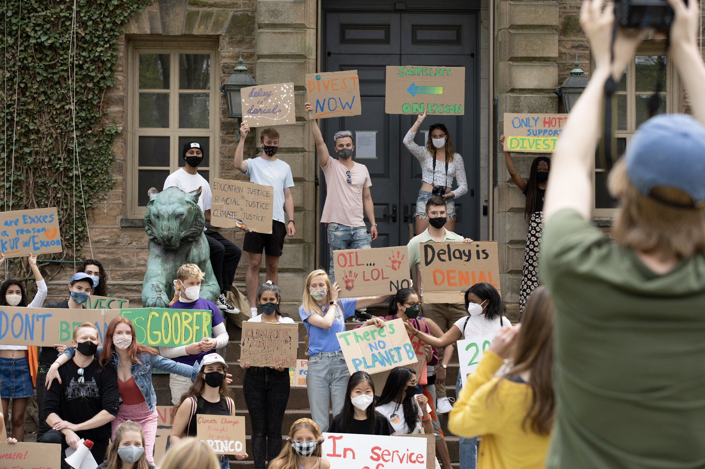

Partnering with attorneys from the Climate Defense Project, we are students and community members from the following universities demanding divestment from fossil fuels to comply with state laws:
Fossil Free Stanford
Partnering with attorneys from the Climate Defense Project, we are students and community members from the following universities demanding divestment from fossil fuels to comply with state laws:
Fossil Free Stanford
On February 16th, student-led campaigns for fossil fuel divestment at Yale University in Connecticut, the Massachusetts Institute of Technology in Massachusetts, Princeton University in New Jersey, Stanford University in California, and Vanderbilt University in Tennessee filed…
Check out this page for the full press release.
Yale Endowment Justice Coalition
The climate movement needs climate lawyers. Climate Defense Project fills a gap in the legal landscape by supporting front-line activists, advancing innovative arguments, and connecting attorneys, experts, and community members. CDP’s three co-founders are graduates of Harvard Law School, where they brought the first fossil fuel divestment lawsuit, Harvard Climate Justice Coalition v. President and Fellows of Harvard College. Since graduating, they have continued to fight for a stable climate for present and future generations.
 Dores Divest Vanderbilt
Dores Divest Vanderbilt
 MIT Divest
MIT Divest
Please send all interview inquiries to the email above.
 Divest Princeton